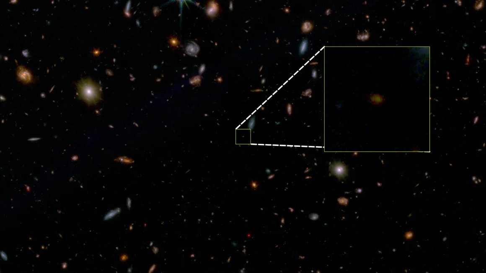
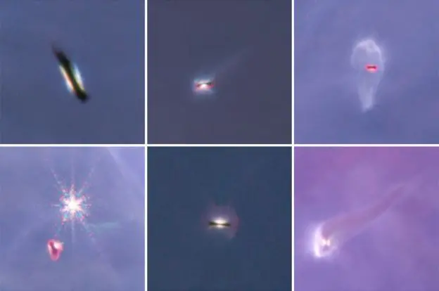
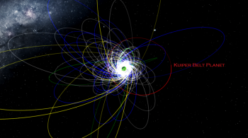

Notícias do Universo
Últimas notícias

Astrônomos detectaram a galáxia “morta” mais antiga já observada usando o Telescópio Espacial James Webb.
Essa é uma das visualizações mais profundas do universo feitas até o momento.

Objetos espaciais similares a planetas, do tamanho de Júpiter e sem conexão com qualquer estrela, foram avistados
flutuando livremente no espaço pelo Telescópio Espacial James Webb

Um estudo liderado pelo pesquisador brasileiro Patryk Sofia Lykawka, da Universidade Kindai, do Japão,
levanta a hipótese da existência de um novo planeta no Sistema Solar